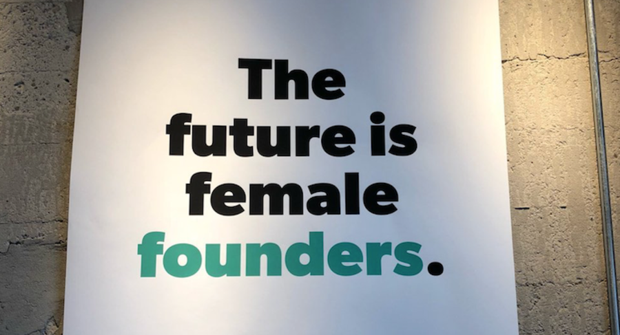

What I Didn't Say

December 2013
A quote from an "interview" with me (I'll explain the scare quotes in a minute) went viral on the Internet recently:
We can't make women look at the world through hacker eyes and start Facebook because they haven't been hacking for the past 10 years.When I saw this myself I wasn't sure what I was even supposed to be saying. That women aren't hackers? That they can't be taught to be hackers? Either one seems ridiculous.
The mystery was cleared up when I got a copy of the raw transcript. Big chunks of the original conversation have been edited out, including a word from within that sentence that completely changes its meaning. What I actually said was:
We can't make these women look at the world through hacker eyes and start Facebook because they haven't been hacking for the past 10 years.I.e. I'm not making a statement about women in general. I'm talking about a specific subset of them. So which women am I saying haven't been hacking for the past 10 years? This will seem anticlimactic, but the ones who aren't programmers.
That sentence was a response to a question, which was also edited out. [1] We'd been talking about the disproportionately small percentage of female startup founders, and I'd said I thought it reflected the disportionately small percentage of female hackers. Eric asked whether YC itself could fix that by having lower standards for female applicants—whether we could, in effect, accept women we would have accepted if they had been hackers, and then somehow make up the difference ourselves during YC.
I replied that this was impossible—that we could not in three months train non-hackers to have the kind of insights they'd have if they were hackers, because the only way to have those kinds of insights is to actually be a hacker, and that usually takes years.
The Unedited Interview
Here's the raw transcript:Eric: If there was just the pro-activity line of attack, if it was like, "OK, yes, women aren't set up to be startup founders at the level we want." What would be lost if Y Combinator was more proactive about it? About lowering standards or something like that? Or recruiting women or something, like any of those options?"We" doesn't refer to society; it refers to Y Combinator. And the women I'm talking about are not women in general, but would-be founders who are not hackers.
Paul: No, the problem is these women are not by the time get to 23... Like Mark Zuckerberg starts programming, starts messing about with computers when he's like 10 or whatever. By the time he's starting Facebook he's a hacker, and so he looks at the world through hacker eyes. That's what causes him to start Facebook. We can't make these women look at the world through hacker eyes and start Facebook because they haven't been hacking for the past 10 years.
I didn't say women can't be taught to be hackers. I said YC can't do it in 3 months.
I didn't say women haven't been programming for 10 years. I said women who aren't programmers haven't been programming for 10 years.
I didn't say people can't learn to be hackers later in life. I said people cannot at any age learn to be hackers simultaneously with starting a startup whose thesis derives from insights they have as hackers.
You may have noticed something else about that transcript. It's practically incoherent. The reason is that this wasn't actually an interview. Eric was just collecting material for a profile of Jessica he was writing. But he recorded the conversation, and later decided to publish chunks of it stitched together as if it had been an interview.
If this had been an actual interview, I would have made more effort to make myself clear, as you have to in an interview. An interview is different from an ordinary conversation. In a conversation you stop explaining as soon as the other person's facial expression shows they understand. In an interview, the audience is the eventual reader. You don't have that real-time feedback, so you have to explain everything completely.
Also (as we've seen), if you talk about controversial topics, the audience for an interview will include people who for various reasons want to misinterpret what you say, so you have to be careful not to leave them any room to, whereas in a conversation you can assume good faith and speak as loosely as you would in everyday life. [2]
All Backgrounds Can Hack
Of all the misinterpretable things I said to Eric, the one that bothers me most is:If someone was going to be really good at programming they would have found it on their own.I was explaining the distinction between a CS major and a hacker, but taken in isolation it sounds like I'm saying you can't be good at programming unless you start as a kid. I don't think that. In fact I err on the side of late binding for everything, including metiers. What I was talking about here is the idea that to do something well you have to be interested in it for its own sake, not just because you had to pick something as a major. So this is the message to take away:
If you want to be really good at programming, you have to love it for itself.There's a sort of earnest indirection required here that's similar to the one you need to get good startup ideas. Just as the way to get startup ideas is not to try to think of startup ideas, the way to become a startup founder is not to try to become a startup founder.
The fact that this was supposed to be background for a profile rather than an interview also explains why I didn't go into much detail about so many of the topics. One reporter was indignant that I didn't offer any solutions for getting 13 year old girls interested in programming, for example. But the reason I didn't was that this conversation was supposed to be about Jessica. It was a digression even to be talking about broader social issues like the ratio of male to female founders.
Y Combinator
Actually I do care about how to get more kids interested in programming, and we have a nonprofit in the current YC batch whose goal is to do that. I also care about increasing the number of female founders, and a few weeks ago proposed that YC organize an event to encourage them:Date: Sat, 7 Dec 2013 17:47:32 -0800We decided to go ahead and do it, and while this is not how I anticipated announcing it, if I don't it might seem when we do that we're only doing it for PR reasons. So look out for something in the coming year.
Subject: female founder conf?
From: Paul Graham
To: Jessica Livingston
I just talked to Science Exchange, who are doing great. It struck me that we now finally have a quorum of female founders who are doing well: Adora, Elizabeth, Kate, Elli, Ann, Vanessa. Should we organize a startup school like event for female founders with all YC speakers?
I've also started writing something about female founders. But it takes me a week to write an essay, at least. This is an important topic and I don't want to rush the process just because there's a controversy happening this moment. [3]
Back to top
Notes
[1]
At one point I only had a small fragment of the raw transcript, and though it was clear I was responding to a question, the question itself wasn't included. I mistakenly believed we'd been talking about the distinction between CS majors and hackers.[2]
This is particularly true in the age of Twitter, where a single sentence taken out of context can go viral. Now anything you say about a controversial topic has to be unambiguous at the level of individual sentences.[3]
The controversy itself is an example of something interesting I'd been meaning to write about, incidentally. I was one of the first users of Reddit, and I couldn't believe the number of times I indignantly upvoted a story about some apparent misdeed or injustice, only to discover later it wasn't as it seemed. As one of the first to be exposed to this phenomenon, I was one of the first to develop an immunity to it. Now when I see something that seems too indignation-inducing to be true, my initial reaction is usually skepticism. But even now I'm still fooled occasionally.Back to top